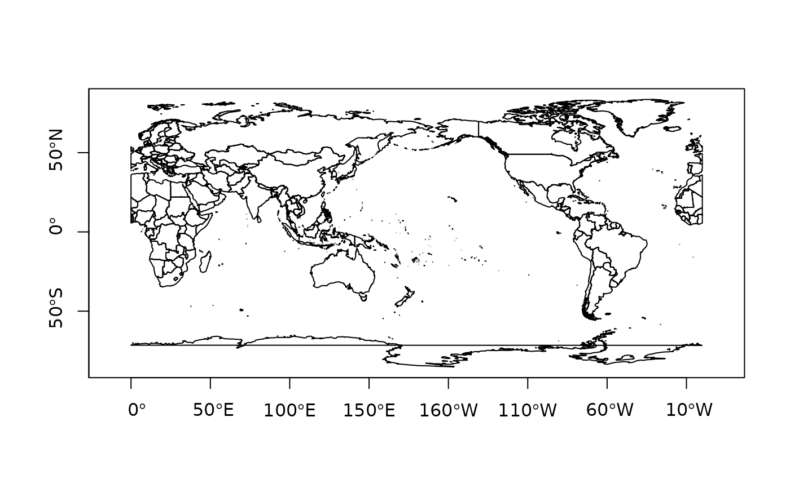

S3 Ops Group Generic Functions for simple feature geometries
# S3 method for sfg Ops(e1, e2) # S3 method for sfc Ops(e1, e2)
Arguments
| e1 | object of class |
|---|---|
| e2 | numeric, or object of class |
Value
object of class sfg
Details
in case e2 is numeric, +, -, *, /,
If e1 is of class sfc, and e2 is a length 2 numeric, then it is considered a two-dimensional point (and if needed repeated as such) only for operations + and -, in other cases the individual numbers are repeated; see commented examples.
Examples
#>#>#># world in 0-360 range: library(maps) w = st_as_sf(map('world', plot = FALSE, fill = TRUE)) w2 = (st_geometry(w) + c(360,90)) %% c(360) - c(0,90) w3 = st_wrap_dateline(st_set_crs(w2 - c(180,0), 4326)) + c(180,0)#> Warning: GDAL Error 1: TopologyException: Input geom 0 is invalid: Self-intersection at 16.123485685639235 -84.347832314219417#> Warning: GDAL Error 1: TopologyException: Input geom 0 is invalid: Self-intersection at 16.123485685639235 -84.347832314219417#>#>opar = par(mfrow = c(2,2), mar = c(0, 0, 1, 0)) a = st_buffer(st_point(c(0,0)), 2) b = a + c(2, 0) p = function(m) { plot(c(a,b)); plot(eval(parse(text=m)), col=grey(.9), add = TRUE); title(m) } lapply(c('a | b', 'a / b', 'a & b', 'a %/% b'), p)#> [[1]] #> NULL #> #> [[2]] #> NULL #> #> [[3]] #> NULL #> #> [[4]] #> NULL #>#> Geometry set for 2 features #> Geometry type: POINT #> Dimension: XY #> Bounding box: xmin: 2 ymin: 4 xmax: 4 ymax: 6 #> CRS: NA#>#>#> Geometry set for 2 features #> Geometry type: POINT #> Dimension: XY #> Bounding box: xmin: 0 ymin: 2 xmax: 6 ymax: 9 #> CRS: NA#>#>#> Reading layer `nc.gpkg' from data source #> `/private/var/folders/24/8k48jl6d249_n_qfxwsl6xvm0000gn/T/RtmptsXaCi/temp_libpathd6552d73c7bb/sf/gpkg/nc.gpkg' #> using driver `GPKG' #> Simple feature collection with 100 features and 14 fields #> Geometry type: MULTIPOLYGON #> Dimension: XY #> Bounding box: xmin: -84.32385 ymin: 33.88199 xmax: -75.45698 ymax: 36.58965 #> Geodetic CRS: NAD27b = st_buffer(st_centroid(st_union(nc)), units::set_units(50, km)) # shoot a hole in nc: plot(st_geometry(nc) / b, col = grey(.9))